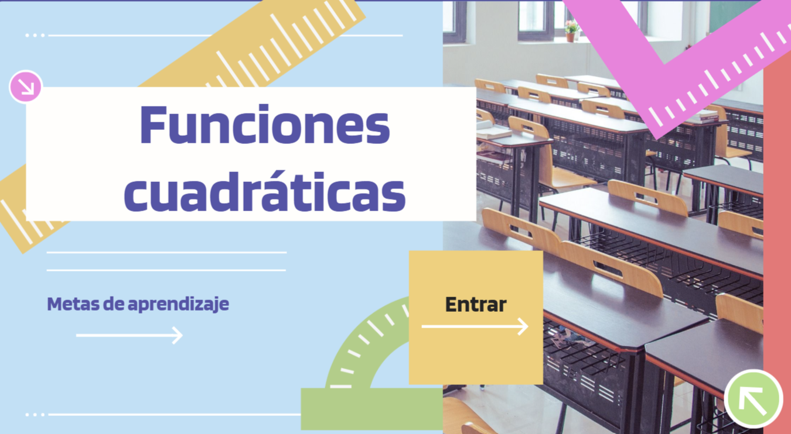

1. Orientación para conocer el contexto en el que se aplican los aprendizajes de esta secuencia, con base en la explicación dinámica.
AVA
Desarrollo de la temática
Explicación dinámica
Ingresa al siguiente enlace para conocer la temática:

2. Consulta de los tutoriales, videos e informaciones digitales mientras desarrollan paso a paso las actividades interactivas y las simulaciones que se encuentran.
Gráfico de Parábolas. Explicación completa
Obra publicada con Licencia Creative Commons Reconocimiento Compartir igual 4.0